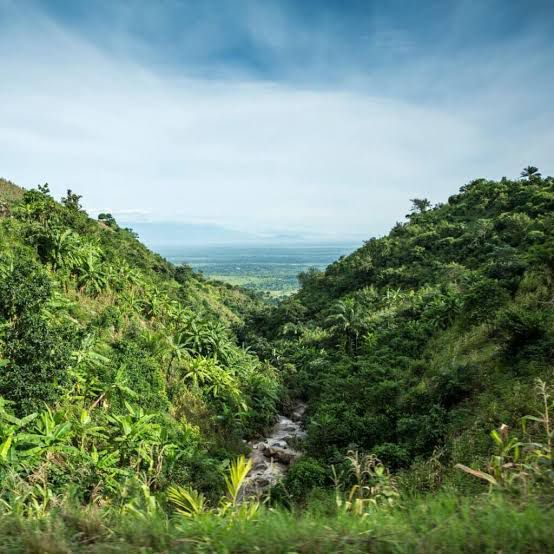
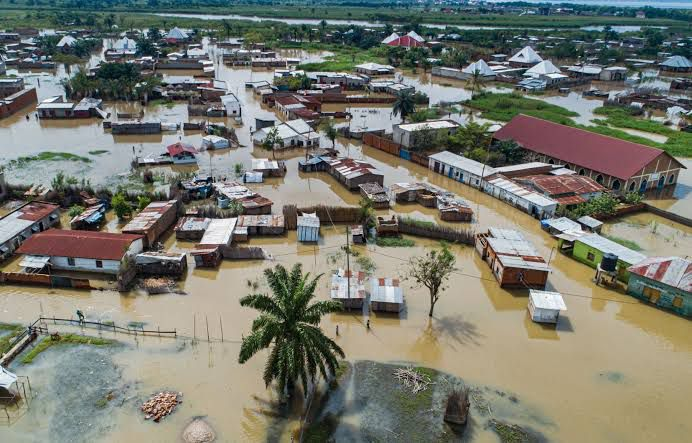

Explore our collection of articles about environmental initiatives and climate action in Burundi.

Burundi Launches National Adaptation Plan Project to Combat Climate Change
On April 10, 2025, Burundi launched the project for the development and implementation of the National Adaptation Plan (NAP) process, marking a new milestone in the fight against the effects of climate change.
Read More

Preserving Burundi's Environment: A National Call to Action
As environmental concerns grow worldwide, Burundi is turning its focus toward sustainable practices to protect its rich biodiversity and fragile ecosystems.
Read More

Climate Crisis in Burundi: Thousands of Children Displaced by Floods
Since October 2023, East Africa has once again been ravaged by the El Niño climate phenomenon.
Read More